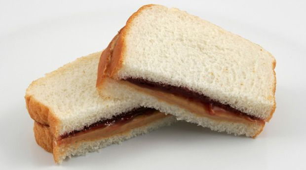

Peanut Butter & Jelly

Description
This recipe will show you how to make one of my favorite quickk lunches!
A Peanut Butter & Jelly Sandwhich. I hope you enjoy it for your lunches
just as much as I do!
Ingredients
- 2 - Slices of Bread (Your choice on type)
- 1 - Butter knife full of Peanut Butter
- 1 - Butter knife full of Jelly (Your favorite flavor ofcourse!)
Steps
- have both of your slices of bread side by side face up.
- spread your butter knife full of peanut butter evenly
across your first slice of bread (On the side facing you.).
- Wipe the residual peanut butter off on the other slice of bread.
- Open the jelly and take a butter knife full of the jelly.
- Spread the jelly evenly across the entire side of the piece of bread.
- Take the peanut butter covered bread slice and place it on top of the jelly slice
(Condiment side facing each other).
- Press down with gentle pressure.
- Optional- Cut into half
- Enjoy!